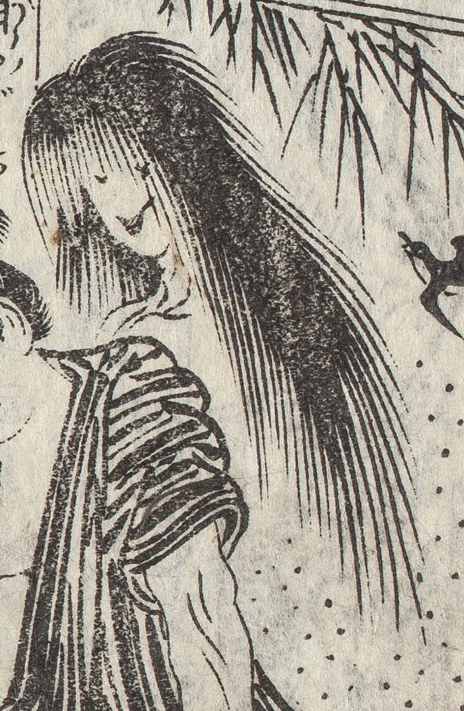

幽霊；ユウレイ，亡魂；ボウコン，女；オンナ

雷太郎に殺された川合宗太夫の妻が肩の後ろからのぞき込むようにまとわりつく。ざんばら髪、体がない。もやがかかる。恨みを述べる。「ああむざんやくるしや、のふいかづちよのう」。
著作者：式亭三馬作・豊國画／出典：親書誌：U426_nichibunken_0450：淺草觀音利益仇討雷太郎強惡物語／日付：2021／資源識別子：U426_nichibunken_0450_0005_0001
Copyright (c)2010- International Research Center for Japanese Studies, Kyoto, Japan. All rights reserved.